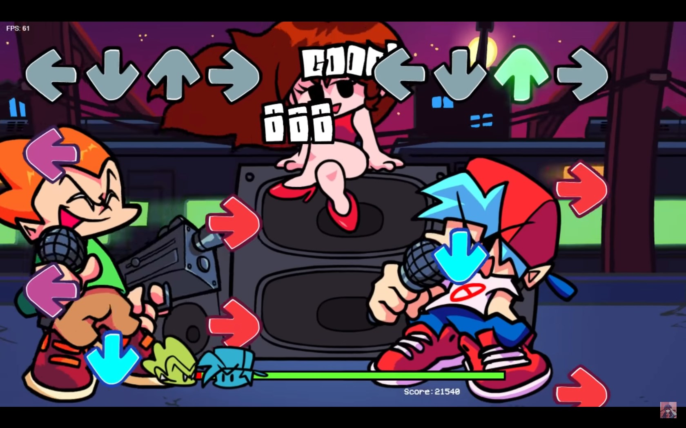

final documentation:
made by matt toups
my inspirations (proposal):
I was inspired by the Rhythm game Dance Dance Revolution (DDR), and Friday Night Funkin (FNF). DDR uses the 4 directional arrows for songmapping, but uses foot controls at Arcades, which is inaccessible for web development. FNF solves this, by putting the controls on the keyboard instead, which is the control scheme that I am using now. These games both feature a co-op mode, by putting the user controls on one side of the screen, but as this is a singleplayer experience, I did not want to make this feature, so I could center my gameplay.

These games usually use some kind of visual that goes along to the gameplay, and I wanted to do something similar. I was originally thinking of something similar to having an avatar dance along to the music, but this would have been distracting in my opinion, and the theming would need to be different depending on which song, which is not sustaiable with the timeframe we had. I decided to go with something more abstract, which was inspired by games like osu!, which has more simplistic visuals that go along with the music.
To this point, I was looking at some simplistic ways to generate visuals, and I found a video by The Coding Train, which was about generating a radial graph using p5.js. I thought this was a really cool idea, and I decided to make my visual something similar to it for my project.
My proposal presentation can be viewed here:
creating the gameplay (proof of concept 1):
Last semester, I took creative coding, and had centered my midterm around this concept earlier, trying to see if I could make a rythym game functional in p5.js. Because I could not find any DDR4-esque games using p5, I had to try and make it from scratch, which took a lot of time, and lead to me spending most of the time on trying to make the gameplay work, and figuring out songmapping, instead of focusing on the design of the game itself. You can check out the midterm version here:
As you can see, aesthetically it is not so strong, but the real issue with this code was the way that I was trying to map the song. I was manually timing each note, which is not scalable for multiple songs, and so before I even began this project, I knew that I would need to find a way to generate notes automatically. I decided to switch over to FFT Noise detection on p5, which looks at the bass, treble, etc of the song and assigns the notes according to when the audio goes over that count. This was a lot more scalable, and I was able to get the generation to work a lot better for songs. However, at this stage, it was generating with a syncing issue and was a bit behind on note timing due to it generating the notes at the top of the screen, an issue I would solve later.
I have the more major changes up on github, but for the more minor versions in order to keep track of each functionality update, I put the version state into p5.js web editor to reference back to.
To summarize each version update (up to the first proof of concept):
V0.5: Based off of Midterm version, but improved UI slightly.
V1.0: Fundamental Rework of Song Generation (but broken), and Title Screen.
V1.1: Fixed Score Counter
V1.2: Broke Score Counter again, but closer to fixing other bugs
V1.3: Notes are finally hittable, but do not generate correctly
V1.4: Notes generate correctly but for only left & up arrows
V2.0: Finally Generating Correctly. First Functioning Demo
V2.1: Proof Of Concept 1
At this point, the song generation was finally functional, but I was facing a bug where the user could hold down the arrow and it would automatically hit the notes while held down, so I needed to fix that. I also wanted to add a way to change the song, and add a way to restart the song, but we were about to begin user testing in class, which helped me decide on where I was going to focus my attention on for the future versions.
user testing (proof of concept 2):
When I began user testing, I noticed that the UI was too close together, so the first thing I decided to adjust was to move the arrows further down the screen, to give more time to process the notes coming down, and to move each arrow element further apart to seperate them mentally. I also experimented with adding a second song into the file, but this was a last minute decision for user testing, where I would just change the file name to which song I would have them test, so the second one was harder due to not being tuned to the note generation yet. This inspired me to focus on assigning a certain difficulty to a song however, as some songs are more complex than others.
I got a lot of helpful feedback and inspiration for what to add, as well as some of my own ideas that I wanted to add but did not get to yet, so I wrote them all down into a list at the top of the versions around now, and would slowly remove each part one at a time until I got to the functionality I wanted. These are the notes that were in the code for Version 2.2 (First fix after User Test)
// notes for stuff to add.
// song scroll, choose songs before starting and choose difficulty, which can be a different song generation.
// i think each song will need to be its own folder in order for this to work properly as the code needs to be adjusted per song though.
// make the arrows generate less inside of each other, they are a bit hard to see as they come down
// the song generation is making the arrows in sync at the top of the screen so when you actually hit the arrows they are off beat. this needs to be fixed and i dont know how
// but i could maybe have two songs playing, one muted on user side but the computer can use that to generate the notes? so that it is ahead and the notes are synced with the song
// on the user side.
// I also need to add ui elements to be prettier, and maybe show more score stuff
// show a score at the end of the song
// show a progress bar, that shows how far through the song you are, this lets the user know how much longer they have to play through a song. maybe with a percentage?
// make the ui elements bigger, it is a bit hard to see
// make the arrows spread out a bit more, and color the 4 main arrows like the notes, though maybe a bit lighter/darker to differentiate?
// use a really simple tonal song that only generates the exact notes intended, as a tutorial of sorts that can teach the user how to play if needed.
// show score info at the end of the song, and maybe a restart button?
I began building a home menu, which would be the first thing the user sees when they open the game. I wanted songs to cater to different difficulty levels, so I assigned different levels to certain songs and depending on which song you have there is an according difficulty, where I tweaked the note generation audio levels depending on the song's assigned difficulty. The home menu itself is arranged where the album covers are in the middle of the screen, and when the user hovers over the covers, they will enlarge and play a shortened version of the song on loop until they hover off, and when clicked, directs them to the song.
I also finally fixed the multiple arrow hitting bug, and added a progression indicator as suggested in class during the User Tests to see how far through a song you are.
These are the two updates I added to the gameplay:
Ver 2.2: First Fix after User Test
Ver 2.3: Proof of Concept 2, added Progression Bar & Home Menu
Proof of Concept 2 Features a homescreen, which went through a few iterations, which broke the formatting, and both versions shown here are not in use in the final version. In the POC 2 though, I ended up with the image on the right, which I liked, but the way it would break the formatting was not ideal.

audiovisuals (proof of concept 3 & final version):
At this stage, I wanted to begin implementing the last few features and refining what I already had. I began by adding the code to create an end screen, which would appear when the song would finish, or the user could end the song early by pressing the enter button, similarly to how you start a song. If you press enter at the end screen, it will take the user back the song select page, which helps reduce the need of going back a page on chrome instead of fully within the browser.
Although simple, I think it gets the point across simply, and that is the goal of the UX which I wanted to be nonintrusive to avoid overwhelming the user with information.
After this, I still had the bug of the notes being off sync, which was really making it hard to play especially with audio on, as the rythm is just slightly behind. So, I tried to calculate the distance of the notes from the top of the screen to the arrows, and used this calculation of time to then subtract from the note generation timing, which allowed me to put it on sync. I was actually suprised this worked, I was expecting to have to call the song twice and check the FFT of the first song that is played earlier by that certain amount, but silenced for the user, and a second one on sync, but it somehow worked out without needing to do anything broken like that.
From this point, I began trying to implement the audiovisuals. Because I decided an avatar would not work with the way this is implemented, I thought that having visuals that respond to the music would work best, so I took the coding train audio generation as inspiration. The way that they implemented it was not working with my code however, which made me almost give up on the idea, then I remembered that I am ussing FFT note generation for the notes, so I would just carry this same concept over to the visuals as well to avoid messing with the detection code. I tried three different types of audiovisuals before I could decide which one to implement.
I started out with the first one, which was a simple line that would fluctuate to the song, but it was so subtle that it was barely noticeable. So, I switched to a circle that would rotate as the song progressed, but some songs simply were in one frequency so it would just be a strong line out from one side rotating, so I decided on the third iteration, where each frequency would be a different sized circle, inside of each other and they would have therefore a more readable range of motion depending on the frequency. This was more visually appealing but still simple enough that it was not distracting to the user.
I also refined the home menu, which put everything on a grid, making it more readable and consistent in sizing, so that the covers were more rigidly in place. At this point, I was happy with the game as is, and just wanted to focus on adding more songs for the final version. The two iterations here were v2.4 and v2.5, which is the final version that I am using for the final.
These are the two versions:
Ver 2.4: Added End Screen & Fixed Syncing of Notes
Ver 2.5: Proof of Concept 3
Final Ver: Final, added a few more songs before finishing.